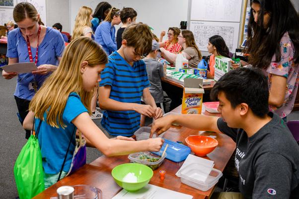

Getting Acquainted 😌
I started my internship just like any other student: with high hopes and grandiose ambitions. I was coming off what is notoriously considered the most stressful school year in high school, so I was more than ready to tackle a newfound challenge.
At first, the experience was exhilarating. I was thrust into different seminars and labs, had the opportunity to work alongside fellow interns at the “Take Your Child to Work Day” event, and was getting accustomed to this thing called “work-life balance.” Furthermore, I was told that I was going to be performing research on machine learning, a subject that has become somewhat of a buzzword in the technology community. I was instantly hooked.
Presenting at Take Your Child to Work Day.
Initial Pitfalls 😵
Over time, things still went great; however, there were some hard bumps along the road. For starters, my work-life balance started to suffer a bit. As I delved deeper and deeper into my work, the difficulty of the work started to exact a mental toll, resulting in me going home and napping at every instance I got. Likewise, I started to get into the habit of “flaking,” or making commitments and never truly sticking to them since I was too tired from my job. Assuredly, this was not something that was the fault of my job or mentor, but just my shortcomings.
The social implications aside, machine learning turned out to be a much harder subject to wrap my head around, despite the plethora of open-source materials that could be found on the web. I was so used to classes where I could simply brush off the content until the last day or have old-fashioned notes from my professor, but at my internship, I had to tackle a complex book and weed through mounds and mounds of documentation.
Finally, while there was another intern at my lab, I wasn’t too open to the idea of collaboration. For the first part of the internship, we focused primarily on different tasks; nevertheless, whether it be during lunch or normal brakes, I would rarely talk to him, making our relationship feel more like acquaintances rather than co-workers.
Mid-Summer Reflection ☀️
The result of all this: a little project that I finished up half-way into my summer internship that, although was aesthetically pleasant, didn’t show much depth and comprehension into the subject matter. While I sure thought the poster looked neat, looking back at the content and writing can be a painful experience; in fact, I now understand some of the confused glances I was given shortly after reading my poster. Regardless, the experiences and lessons were important to take in, especially as I embarked on a new project.

Presenting my first poster at Summer Poster Day.
Finding Footing ✊🏼
As the second half of my summer internship commenced, my mentor presented me with a new project: one that would be extremely more intensive and more guided. After talking about the intricacies of the project, I was instantly hooked, alongside my co-intern. Subsequently following numerous logistics, we began to work.
With half of my summer internship finally under my belt, I developed a better grasp of understanding how I could learn better. One of those ways was through more direct mentorship and interaction with other peers performing similar work. Due to existing connections, my mentor linked my co-intern and me together with interns at Hood College and the Berkeley National Lab, allowing us to engage in weekly meetings about the work we were doing, milestones we had achieved, and plans for the future. Assuredly, many people find meetings to be oftentimes tedious or unnecessary, but I found them as a way to express the thoughts in my head out loud and get some validation, not about the correctness of my work, but that the journey was tough for everyone who was just learning.
Also, as the project was group-based in nature, I started talking a lot more with my other co-intern: no longer just fleeting waves and goodbyes, but more talk about our respective school lives, personal interests, and more. Aside from simply being a great guy, my co-intern’s anecdotes about his previous internship experience were even more rewarding. As a returning intern in the same lab from previous years, he talked a lot about how he, too, struggled to find his footing with such a technical subject. Even so, he even remarked that I seemed to be grasping the subject matter much faster than he did, which gave me a bit of reassurance.
Finally, I was starting to better manage my time outside of my work, allowing me to spend the day focusing on just my work and the rest of the time on hobbies, social events, and other events that kept me sane. Primarily, I got help from my parents, who encouraged me to enjoy the time outside of Fort Detrick even during times when I felt too tired to traverse anywhere. Even though I had so much I had to learn, the prospect of “work-life balance” wasn’t merely some tedious task — it was necessary to ensuring the my experience wouldn’t deteriorate the rest of my wellbeing.
True Progress ✅
With July turning into August, we made great strides in our research project. My co-intern and I were often collaborating, shared helpful results and tips to get better statistical results, and killed our end of the summer presentations in front of both our lab group and fellow interns at Hood College. At the end of the summer internship, I couldn’t help but feel both sad and excited: sad because of my co-intern leaving, but extremely excited at the prospect of publishing a paper for a technical conference on our work, a possibility our mentor presented.
All in all, the summer experience wasn’t perfect: it sure had its highs and lows. With that being said, I can’t attribute much of the pitfalls to the organization of the internship program nor my mentor, but my flaws as a student. I’m grateful at how the WHKs have the summer to “train,” as I believe that I ended the summer on a good note but with more promise to trend further upwards.